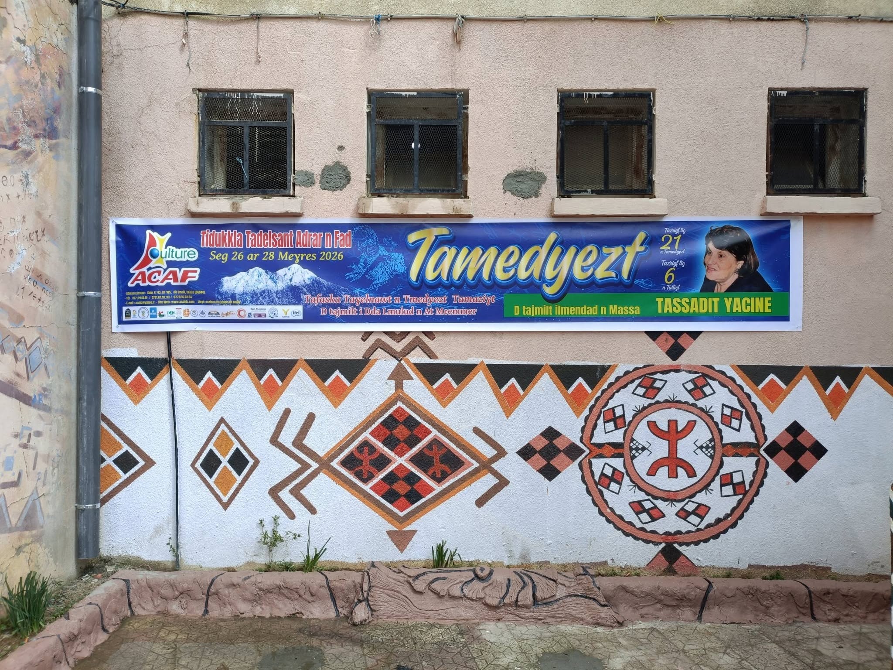

Les assoiffés
Association Culturelle Adrar n’Fad (ACAF)
Sous le ciel rude
où tremble la lumière,
naît un nom
qui porte la mémoire des pierres :
Adrār n’Fad —
la montagne de la soif,
non pas misère,
mais appel,
non pas manque,
mais élan vers l’autre.
Les assoiffés,
non d’eau seulement,
mais de paroles,
de livres ouverts,
de chants oubliés
dans la gorge des anciens.
Ils marchent
et leurs pas soulèvent
la poussière des silences,
et dans chaque grain
danse une promesse.
Ô montagne,
tu n’es pas aride —
tu caches dans tes plis
des sources secrètes,
celles que l’on creuse ensemble,
à mains nues,
à cœurs liés.
Ils viennent
avec des bras offerts,
des regards pleins de veille,
et déposent au creux des jours
des gestes simples
comme l’eau :
partager,
apprendre,
relever,
écouter.
Chaque action,
une goutte ;
chaque goutte,
une rivière invisible.
Dans les villages où le vent
raconte la fatigue,
ils plantent des graines
de culture,
et l’on voit germer
des mots nouveaux
sur les lèvres des enfants,
comme si la langue elle-même
avait retrouvé sa source.
Les assoiffés —
quel beau surnom
pour ceux qui donnent !
Car leur soif est lumière :
elle ne consume pas,
elle éclaire
le chemin des autres.
Et moi,
je vois dans l’ombre bleutée
de cette montagne
une flamme douce,
celle qui ne s’éteint pas,
celle qui dit :
tant qu’il y aura soif,
il y aura des mains
pour offrir l’eau.
Ait Smail le 27 Mars 2026
20e édition du festival de la poésie amazigh.
Djamel Metref

← Tous les poèmes